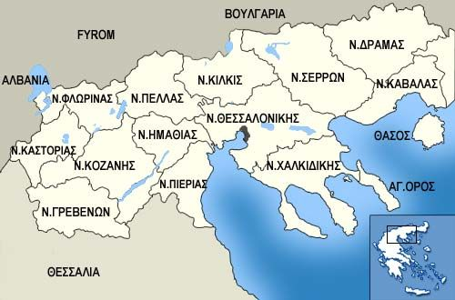

Μακεδονική κουζίνα

Αρχική|
Κυκλαδίτικη κουζίνα |
Μακεδονική κουζίνα |
Eπτανησιακη κουζινα |
Θρακική κουζίνα |
Ηπειρωτική κουζίνα|
Κρητική κουζίνα|
Η κουζίνα της Θεσσαλίας|
Παραδοσιακά φαγητά της Μακεδονίας
- Κοτόπουλο ψητό με πάστα βοτάνων
- Μπακαλιάρος πλακί
- Λαχανόπιτα παραδοσιακή
- Χταποδάκι με κρασί
- Χοιρινό φιλέτο με λάχανο και ντομάτα
Συνταγές
Κοτόπουλο ψητό με πάστα βοτάνων
Χοιρινό φιλέτο με λάχανο και ντομάτα